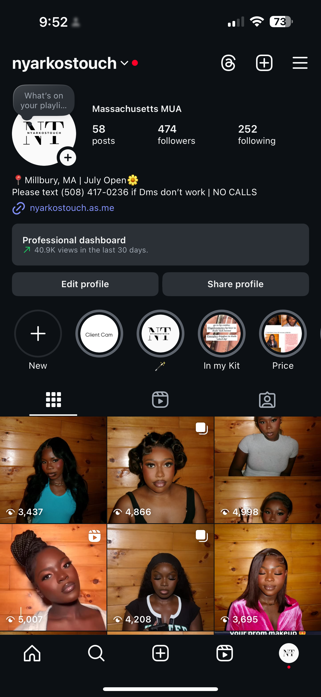
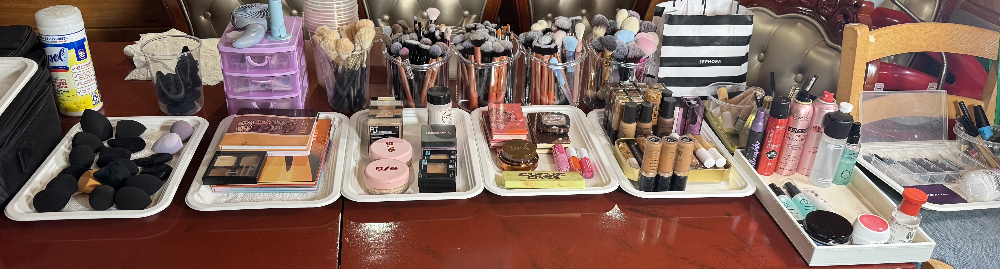
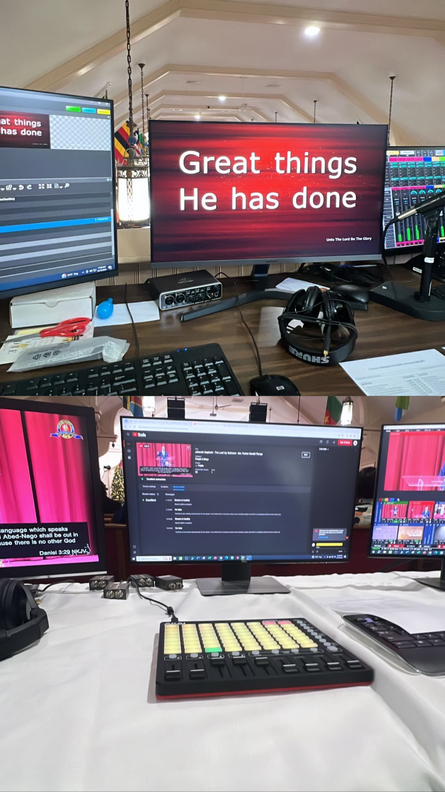

Outside of academics, I am a dedicated full-time makeup artist, where I get to express my creativity and passion for beauty every day.


I also work as an audiovisual booth tech at my church

In my free time, I enjoy immersing myself in a good book, staying fit through various forms of exercise, and indulging in a bit of retail therapy. I have a keen interest in exploring new activities and staying current with the latest trends in beauty, technology, and fashion. Whether it's experimenting with new makeup techniques, discovering the latest tech gadgets and news, or updating my wardrobe with the latest fashion trends, I am always eager to learn and grow in all aspects of my life.
Photography
When I'm not indulged in school work, I also love photography. Here are some of my favorite shots—scenes from the water, sunsets, and everyday moments I've captured.